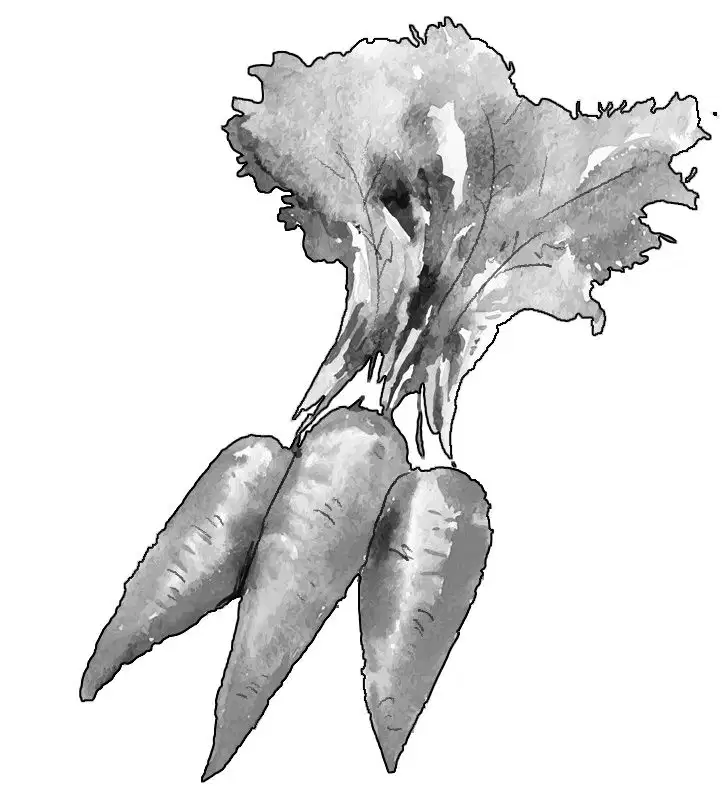

First Aid
这是一个晴好的早晨，阳光明媚，天气既不太冷，也不太热。
“还记得吗？咱们上次去船屋走的就是这条路，只不过当时坐的是旅行车。”亨利说道。
“没错。”班尼说，“第一次停船的地方叫什么来着？”
“好像叫‘二次登陆’吧？”维莉说道，“我记得那儿有个商店。”
“这次也在那里停一会儿吧！”班尼说，“说不定店主还记得咱们呢。”
“正好可以买些吃的当午餐。”杰西说。
乡间的小路很是令孩子们欢喜——路面平坦不说，道路两旁还有密密的灌木和树丛。
此时，孩子们已经骑了十英里左右。
“我好像看见树丛中有铁轨穿过，也许前面是个小镇呢。”班尼说。
等骑到近处，班尼猛地叫了起来：“就是这里，这儿就是‘二次登陆’，我记起来了。”
“看，马丁先生的商店！”亨利说，“那次船屋旅行，咱们就是在这儿买的日用品。”
孩子们将自行车斜靠在小店的侧墙上，走了进去。
刚一进屋，便听到一个女人的声音在说：“唉，马丁先生，可把我给愁坏了。”
“真替你着急，兰多太太。”马丁先生说道，“快讲讲出了什么事儿，看我能不能帮得上忙。”他冲奥登家的孩子们点头打了个招呼，“我马上就来。”
孩子们终于看清了兰多太太的样子——她是个非常漂亮的女人，一头棕色的卷发，身材娇小，只是神情里透着明显的焦虑。

“今天晚上，我先生要请他的老板伊凡先生到家里吃饭。”她说，“而我刚送卡尔去夏令营回来，家里乱糟糟的。现在，既要精心准备晚餐，又要收拾屋子和院子，我一个人怎么忙得过来啊！”
这时，杰西走到了柜台前：“打扰了，我无意中听到您的话。”
兰多太太转过身，看到了四个孩子。
“我们愿意来帮您。”杰西说，“我们正在骑车旅行，维莉和我可以帮您做家务，亨利和班尼可以帮您打扫院子。”
“对啊！”亨利补充道，“反正我们有的是时间，也很乐意为您效劳。”
兰多太太呆住了，她张大了嘴，半晌才脱口而出：“你们真是太好了！不过咱们才头一次见面，我怎么好意思让你们做这些呢？”
“这有什么？”班尼说，“让我们试试啊！”
“这下你可找对人了。”马丁先生说，“他们是奥登家的孩子，我们之前就打过交道，您绝对可以信任他们。”
“反正我们也是出来探险的。”班尼说。
马丁先生哈哈大笑起来：“做家务跟探险可是两码事，这差事可不轻松啊。”
“如果你们真的不介意……”兰多太太的话还没说完，便被班尼打断了。
“我们当然不介意。”他说，“赶紧开始行动吧，别磨蹭啦！”
“好吧！”兰多太太说道，“就这样定了！我来买些做炖菜的食材。”
“太棒了。”维莉说，“我爷爷最喜欢吃炖菜了。”
马丁先生已经动手将食物装进袋子里。
“交给我好了。”亨利说，“我们放在车上给您带过去。”
“噢，用不着骑车的。”兰多太太说，“我家就在街角那里。”
“可咱们总不能把自行车扔在这儿啊。”班尼说，“还是把东西交给我们，顺路带过去好了。”
于是，孩子们慢慢地骑着车，跟在步行的兰多太太后面。
“就是这儿啦！”兰多太太用手指了指。等兰多太太开门的工夫，两个男孩就已经注意到，院子里的杂草的确该修剪了。
把孩子们领进厨房时，兰多太太随口问道：“有你们帮忙真好！只是，你们吃过午饭没有？”
“还没有呢！”班尼答道，“我都要饿死了！”
兰多太太笑了起来：“你呀，跟我的儿子真是太像了。卡尔也是动不动就喊饿。”
不过，话音刚落，她脸上的笑容就消失了，取而代之的，是一丝焦虑的神情。
“真是奇怪啊！”奥登家的孩子们心想，“她的忧心事不是解决了吗？”
“已经有了四个帮手，她还在担心什么呢？”杰西有些摸不着头脑。
但她没有多想，只是从袋子里拿出黄油和面包，做起了三明治。
“我没准备三明治，就给你们拿些牛奶和香蕉来吧！”兰多太太说。

亨利搬来四把椅子，摆在餐桌旁。看着孩子们狼吞虎咽的样子，兰多太太不禁感慨道：“能有你们来帮忙，真太不可思议了，我感觉像是在做梦一样呢。”
“这可不是做梦！”班尼说，“不信您摸摸我。”大家都笑了起来，气氛变得轻松多了。
吃过午饭，两个女孩开始动手清洗早餐和午餐的盘子，两个男孩则来到了院子里。
“草耙和工具都在车库里。”身后传来兰多太太的叫声，“只是别去碰……”说到这儿，她顿了顿，半晌才接着说道，“唉，你们也不会去碰的。”
亨利和班尼对望了一眼。“这话是什么意思？”班尼问道，“我感觉有些不对劲，可又想不出到底是哪里不对。”
“我也想不出。”亨利说，“这也难怪，咱们才来不久，也许过会儿就知道了。”

接下来，大伙儿都安静地干着活儿，耳边只听得到盘子的碰撞声和除草机的轰隆声。兰多太太已经上楼去整理床铺了，做炖菜所需的食材全都放在了桌子上——有罐装牛肉、大白菜、胡萝卜，还有些大头菜。

杰西和维莉动手摘起了青菜，她们把所有食材放进炖锅里，除了土豆——土豆得等一会儿再加。
正在这时，兰多太太走下楼来：“这个菜要炖好久呢！”
“好在做了这道大菜就不用再做其他菜式了。”杰西说。
“要不做些苹果馅饼吧？”维莉说，“兰多太太，让杰西给您做些苹果馅饼好吗？我来负责削苹果。”
“我敢说，你们做的苹果馅饼肯定是人见人爱。”兰多太太说，“不瞒你们说，我先生今早从波士顿打电话回来时，紧张兮兮的，对于老板伊凡先生为什么要到家里来，他心里是一点底儿都没有的，要知道他们在波士顿随时都见得着……没准是他的工作出了岔子……”
此时，班尼刚好走了进来，听到了她的话。“那也不一定。”班尼说，“或许伊凡先生打算给您先生升职加薪呢？”
兰多太太笑了起来：“有这个可能。不过，他为什么非要到家里来呢？”
“这肯定是有原因的。”杰西说，“咱们只能等着看了！”
兰多太太转身去打扫厨房了，只是没过多久，维莉便注意到，她在桌旁坐了下来，用手捂着脸。
“您没事吧？”维莉担心地问道。
兰多太太吃了一惊，赶紧故作欢快地说：“噢，没事，我就是歇一会儿而已。”
维莉可没这么想：“她一定是有忧心的事儿！”
接着，两个女孩帮着兰多太太收拾起了屋子，准备迎接客人。“这应该是您儿子的拖鞋吧？”维莉说着，举起了一只绿色的旧拖鞋，拖鞋的一边已经完全裂开了，“我在沙发后面找到的。”
“是的，那是卡尔的。”兰多太太说，“这孩子就是不利索。”
“男孩大多都是这样子。”杰西说着，笑了起来。

兰多太太也跟着笑了起来，但瞬间过后，忧伤又一次浮现在她的脸上。“有些不对劲啊！”维莉暗想，“这肯定跟卡尔脱不了干系。”
布置好餐桌，兰多太太便说：“客人六点钟的火车，我现在上楼去换件长裙。”
可随后，孩子们又听见她小声叹息道：“唉，天哪！哦，老天哪！”几个孩子不由得面面相觑。
“她还在担着心呢！”杰西对亨利说。
六点钟到了。
“听，是汽笛声！”班尼说，“火车进站了。”
孩子们都知道，火车站离这里不远，兰多先生和伊凡先生随时都可能到家。果然，没过多久，两个男人便出现在门前的小路上。
兰多太太把两人迎进门，跟伊凡先生握了握手：“您好啊，伊凡先生，欢迎欢迎。”
“能到贵府做客，实在荣幸之至！”伊凡先生对兰多太太微微一笑，只见她的卷发光滑而整齐，蓝色的亚麻裙显得十分得体。
“快进来坐。”兰多太太说，“我给我的先生准备了一份惊喜——这不，我在买杂货的时候碰到了这几个好心的孩子，他们本打算骑车旅行的，现在却来给我帮忙了。”
“您是说，之前并不认识他们？”伊凡先生问道，不觉微微笑了起来。
“他们和店主马丁先生倒是认识。”兰多太太说，“不过我们现在已经彼此熟悉了，还成了好朋友。”说完，她把孩子们一一介绍给了伊凡先生和丈夫。
“我的鼻子没骗我吧？”伊凡先生说道，“好多年没有闻到这种香味了，像是……新英格兰风味的炖菜！”
“猜中了！”兰多太太惊喜地说，“这么说您喜欢它，那我就太开心了。另外，杰西还为我们做了苹果馅饼。你们一定想象不到，我的这几位小朋友有多能干！”
“留下来吃饭吧，孩子们！”兰多先生对孩子们说道。
亨利摇了摇头：“我们也很想留下来，先生，可现在必须得赶路了，从这里到阿什比，途中有个汽车旅馆，我们打算赶到那儿，在那里过夜。”
“我也留过他们的，可这几个孩子就是不肯。”兰多太太说，“你们返程的时候，总可以过来待一会儿吧？”
杰西笑了起来：“行啊，兴许可以的。跟您在一起很开心。”
这时，伊凡先生开口了：“真遗憾小家伙们不能留下来，你们一定很奇怪，我为什么要来这儿——本打算以后再告诉兰多先生的，可既然你们急着要走，我现在就宣布答案吧——其实跟你们奥登兄妹不无关系。”
这番话让所有人都摸不着头脑，要知道伊凡先生在来之前，压根不认识奥登兄妹。

只听伊凡先生继续说道：“兰多先生的工作非常出色，他十分称职，人缘也很好，我打算让他在公司里担任更重要的职位，在此之前，我要确保他有个人缘不错的贤内助才行。果然不出所料，这下我放心了！以后两位要搬到波士顿去了，希望你们会开心！”
兰多太太惊喜地望向杰西：“看看你们帮了我多大的忙！”
“真是个好消息啊！”兰多先生说道，“至于我的妻子，您尽管放心好了，她比我人缘还好呢。”
于是，奥登兄妹跟兰多夫妇以及伊凡先生一一握手后，便蹬上自行车准备出发了，临行前大家又一次挥手道别。
孩子们很快把“二次登陆”甩在了身后。因为一路顺风，骑车的速度似乎也快了起来。
亨利看了看手表：“还有两个小时左右，天就要黑了。”
“非要到了旅馆才能吃饭么？”班尼问道。
“不呢，只要有合适的地方就可以开吃了。”亨利保证道，“大家都饿了。”
孩子们继续向前骑着，杰西说道：“噢，我好喜欢乡间的小路。班尼，咱们已经完成了一次探险呢！”
“不过还有没解开的谜团，”班尼说，“是关于兰多太太和卡尔的——我总觉得有哪里不对劲儿。”
“这事儿绝对另有蹊跷，”维莉说，“绝不只是请客人吃饭这么简单。”
“没错。”杰西赞同道。
又骑了约摸有半个小时，亨利突然叫了起来：“快看，有家餐厅！”
“太好了。”班尼说，“我都饿坏了。”
一个小时之后，奥登兄妹结束了晚餐，他们走出餐厅，骑上了自行车。
“好像要下雨了。”维莉说道，“看看那些黑云，咱们总得抓点紧了！”
然而班尼此时还不知道，他正急匆匆地朝着下一次的历险赶去。